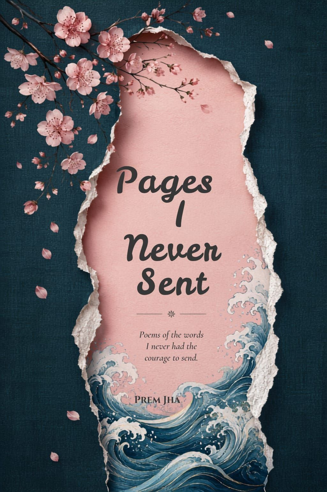

Author of Pages I Never Sent · premjha097
Prem Jha is an Indian author and emerging writer based in Chandigarh, India. He is the author of Pages I Never Sent, his debut poetry collection exploring love, memories, solitude, relationships, and the emotions that often remain unspoken.
His writing is shaped by an interest in human psychology, philosophy, personal experiences, and the gap between what people express publicly and what they carry privately. Alongside writing, Prem is pursuing a bachelor's degree in Tourism and Travel Management and is interested in travel, culture, digital media, technology, and creative entrepreneurship.
As a young independent author, he is building a multidisciplinary creative identity that brings together literature, digital storytelling, communication, and contemporary forms of publishing. Through his writing and future projects, Prem aims to explore human experiences from different perspectives while developing a distinctive voice of his own.
Prem was born on 18 June 2007 in Panchkula, Haryana.

Poems of the words I never had the courage to send.
Pages I Never Sent is a collection of poems born from the spaces between words - the letters left unsaid, the feelings hidden too well, and the goodbyes that never found their voice. Each page is a quiet confession, a memory, a wound, and a prayer.
This book is for anyone who has loved deeply, lost silently, overthought endlessly, and written in the dark just to stay sane. These poems are not answers. They are pieces of the heart he had to let go of.
If you've ever written something you never sent, this book is for you.
Releasing 21 November 2026